想搞AI的朋友肯定遇到过这种情况：
看到一个很强大的 AI Agent 项目，但打开一看——全是命令行操作。
想试试，但一想到要装依赖、改配置文件、记各种命令，就打了退堂鼓。
我们都知道 Hermes Agent 是一个很火，功能强大的 AI Agent 项目。
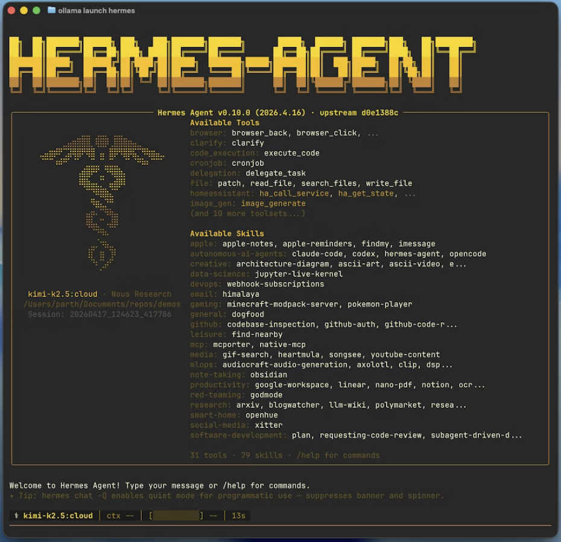
它能搜网页、跑终端、读写文件、调用各种工具，但所有操作都在命令行里完成。
我之前刷到一个叫 Hermes Desktop ，一直在关注，解决的就是这个问题。
今天端出来给大家介绍下。
它给 Hermes Agent 套了一层图形界面，安装、配置模型、聊天、管记忆这些事，全部在界面里点一点就能完成。
更实用的是，它还能让 AI 助手同时接上微信、钉钉、飞书、Telegram、Discord——填个 Token，开个开关，就完事了。
目前 GitHub 上已经拿了 4600+ Star。
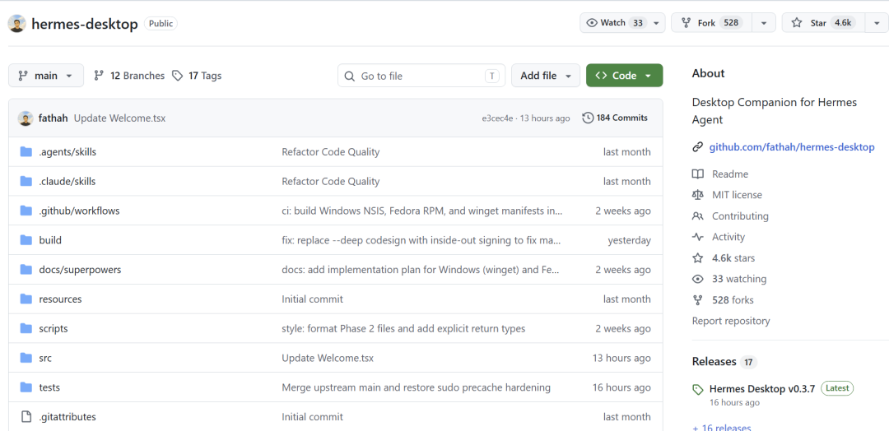
简单说，它不是另一个 Agent，而是 Agent 的控制面板。
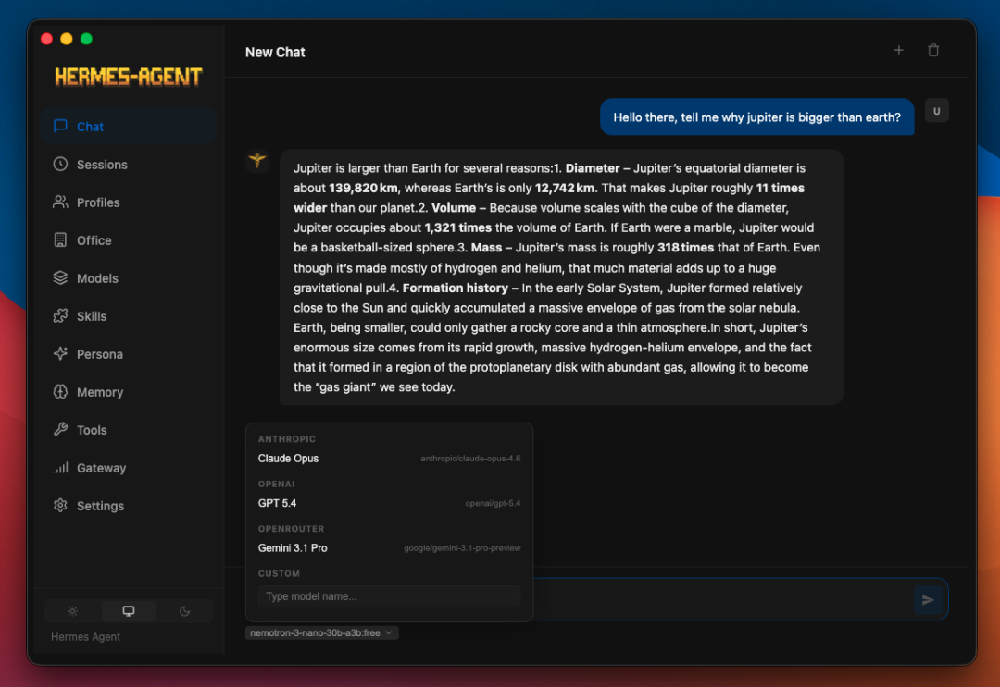
先从安装说起。
直接去 GitHub 仓库的 Releases 页面下载对应平台的安装包——Windows 下载 .exe，macOS 下载 .dmg，Linux 有 .AppImage、.deb 和 .rpm 三种格式。
Windows 用户也可以直接在终端跑 winget install NousResearch.HermesDesktop，一行命令装完。
装好打开，应用会先问你选本地模式还是远程模式。
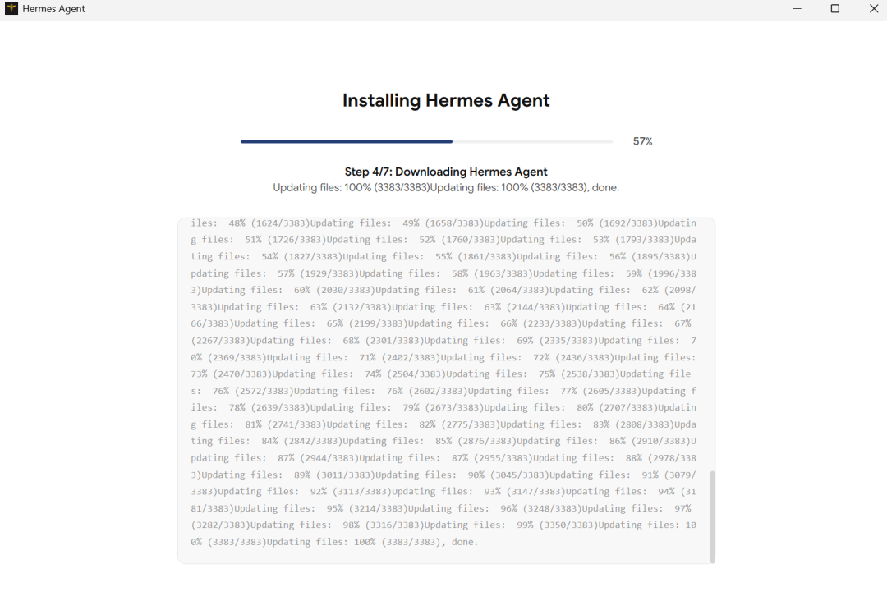
本地模式下，它帮你自动装好 Hermes Agent 和依赖，你只需要选一个 LLM 提供商、填上 API Key 就能开始聊天。
远程模式则是连上一台已经跑着 Hermes API 的服务器。
整个流程不需要手动改任何配置文件，这在以前得翻好几层目录才能搞定。
装好之后，第一件事是配置模型。
Hermes Desktop 支持的提供商很全：OpenRouter（200+ 模型）、Anthropic、OpenAI、Google Gemini、xAI Grok、Nous Portal（有免费层）、Qwen、MiniMax、Hugging Face、Groq。
本地模型则支持 LM Studio、Ollama、vLLM、llama.cpp。
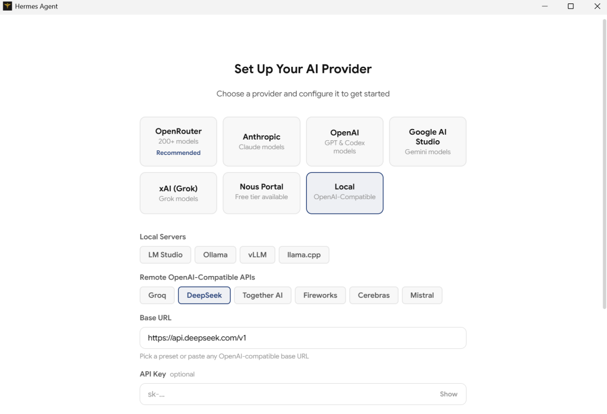
在 Models 页面可以添加、编辑、切换模型配置，不用去翻配置文件。
如果你不想花钱，选 Ollama，它是完全本地运行的，不需要 API Key，但前提是你的电脑能跑得动本地模型。
用更强的模型可以试试 OpenRouter，它聚合了 200 多个模型，注册就送免费额度，填上 API Key 就能用。
模型配好，接下来是工具。
Hermes Desktop 内置了 14 个工具集：
网页搜索、浏览器自动化、终端执行、文件读写、代码运行、图像理解、图像生成、语音合成、技能管理、记忆管理、会话搜索、澄清确认、子代理委派、混合代理架构。
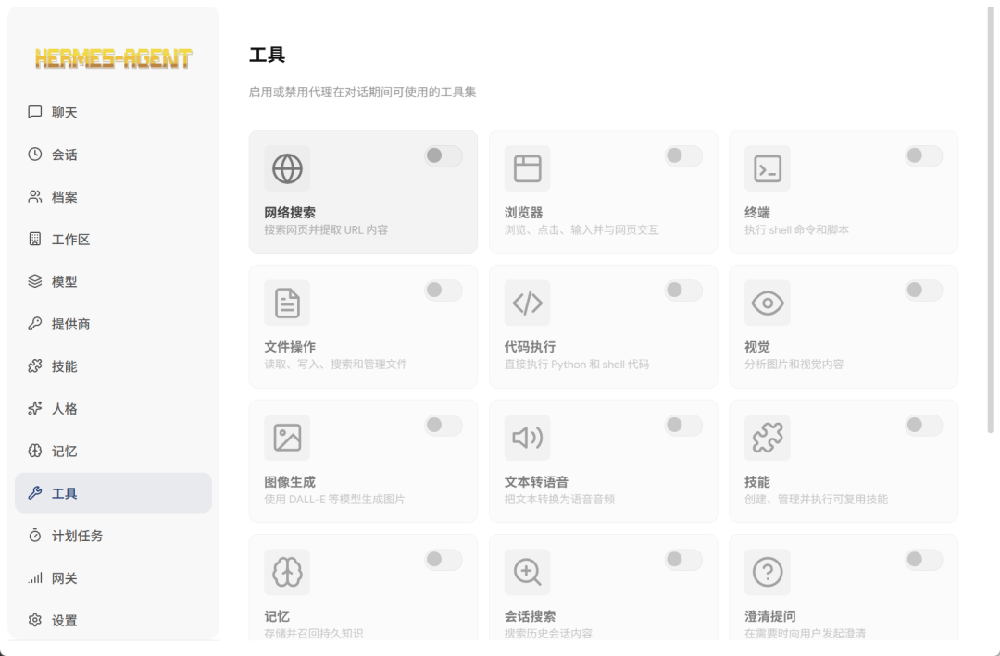
全部在界面里可配置、可开关，你不需要去改 YAML，在 Tools 页面勾选就行。
工具之外，它还内置了很多技能。
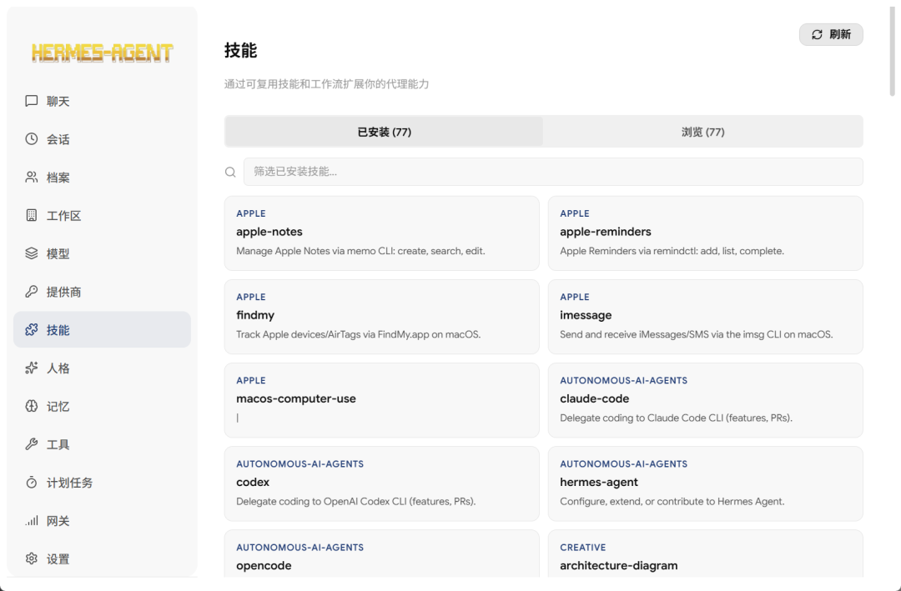
这些技能覆盖了日常开发的常见场景，比如代码生成、文档整理、数据分析等。
在 Skills 页面可以查看、启用、禁用这些技能，也可以自己添加新的技能。
配置完这些，就可以开始聊天了。
聊天界面走 SSE 流式输出，模型一边生成你一边看，中间如果调用了工具，进度会直接显示在对话里。
底部还有实时 Token 用量和费用统计，不用再猜这轮对话烧了多少钱。
另外还有 22 个斜杠命令，比如 /web 搜网页、/memory 查记忆、/skills 看技能库、/model 切模型，比纯 CLI 操作直观不少。
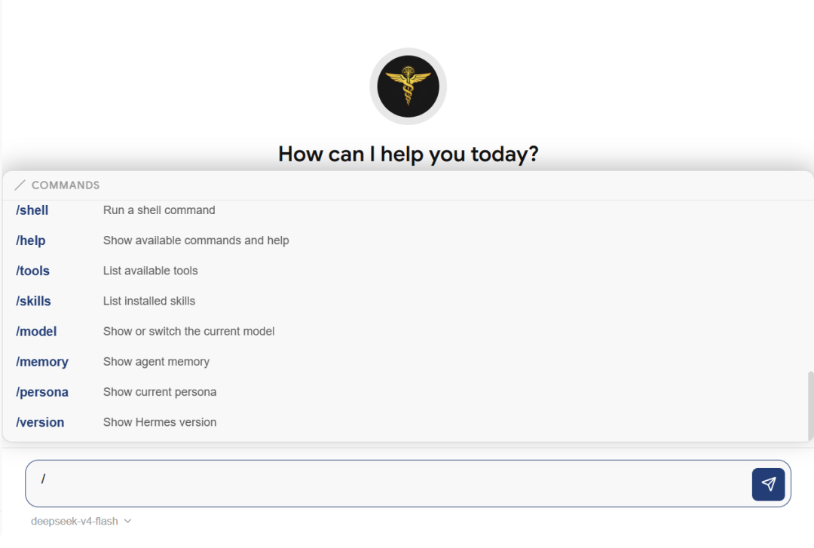
如果你想让 AI 助手接入各种消息平台，Gateway 页面就是关键。
16 个平台，Telegram、Discord、Slack、WhatsApp、Signal、Matrix、Mattermost 这些海外主流的都有。
更关键的是钉钉、飞书、企业微信、微信（iLink Bot）也在列表里。
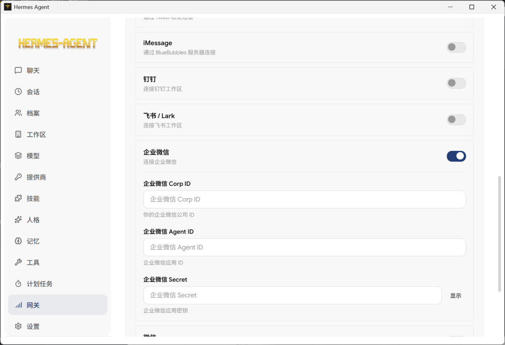
配置方式很简单，在 Gateway 页面填上对应平台的 API Key 或 Token，开关一开，Hermes Agent 就能同时在这些平台上收发消息。
社区里有人评价"这类产品的价值，往往不在能做多少，而在能不能直接用上"，消息网关就是那个"直接用上"的典型。
除了消息网关，记忆系统也很实用。
Hermes Agent 的记忆分条目记忆和用户画像记忆两层，Hermes Desktop 把它们都搬进了界面，支持查看、编辑、搜索，还能看到当前记忆容量。
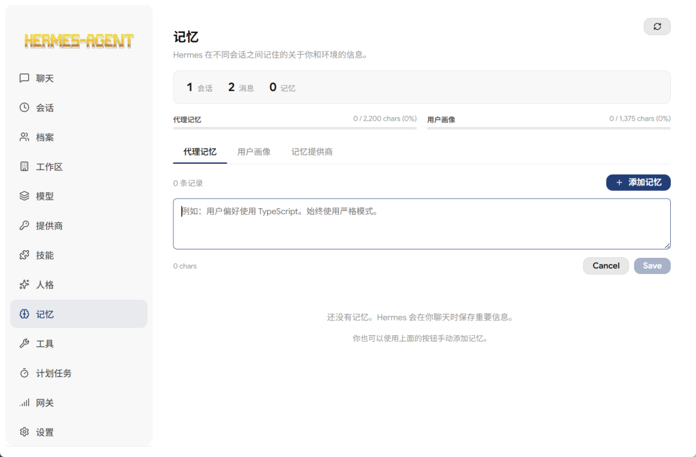
更实用的是它支持 6 种记忆提供商——Honcho、Hindsight、Mem0、RetainDB、Supermemory、ByteRover——在 Memory 页面切换就行。
定时任务则是另一个亮点。
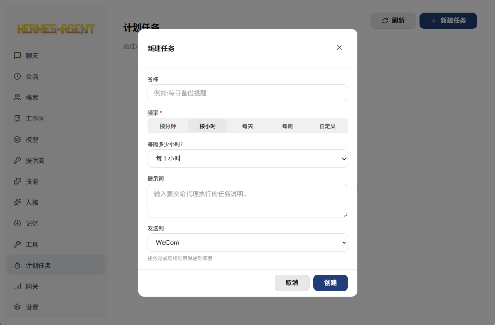
在 Schedules 页面，你可以用图形化的频率选择器设置 Cron 任务——每小时、每天、每周，或者直接写自定义 Cron 表达式。
然后选一个投递目标，比如每天早上 9 点让 Agent 把昨天的技术新闻摘要推到你的 Telegram 群里。
15 个投递目标和消息网关对应，暂停、恢复、立即执行都可以在界面里操作。
还有一个比较有意思的功能——3D 可视化环境。
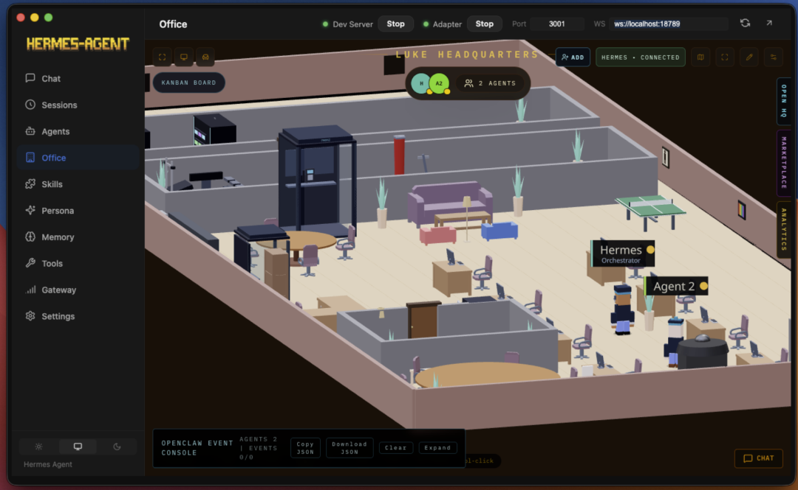
很有意思，它里面展示了Agent在虚拟办公室的状态，干到哪一步，修复这些都能直观的看见。
我拿一个案例来看看配置有多简单。
最后的效果是 早上 9 点，你的微信会收到发来的消息。
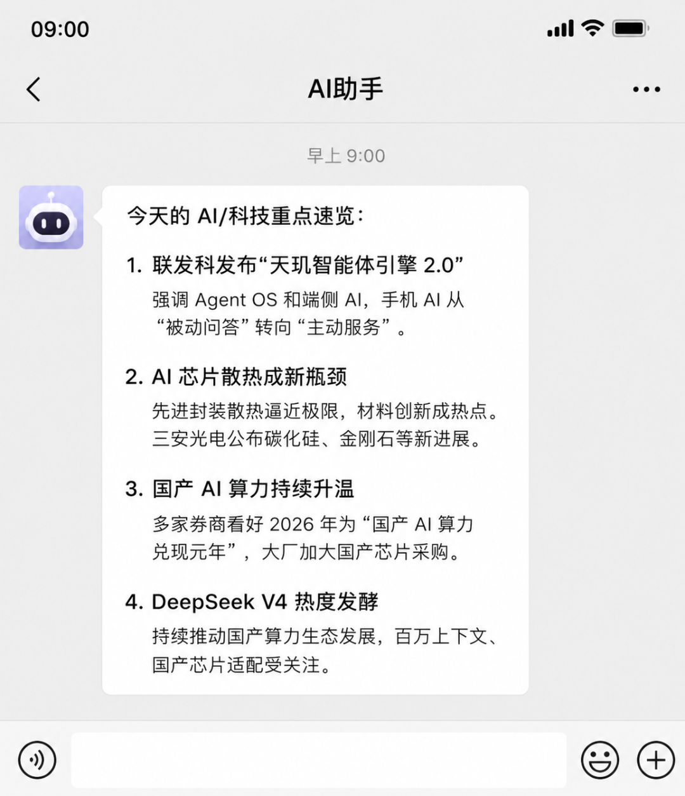
配置过程如下。
01 配置模型。
在 Models 页面选一个模型，比如 DeepSeek，填上URL， API Key。
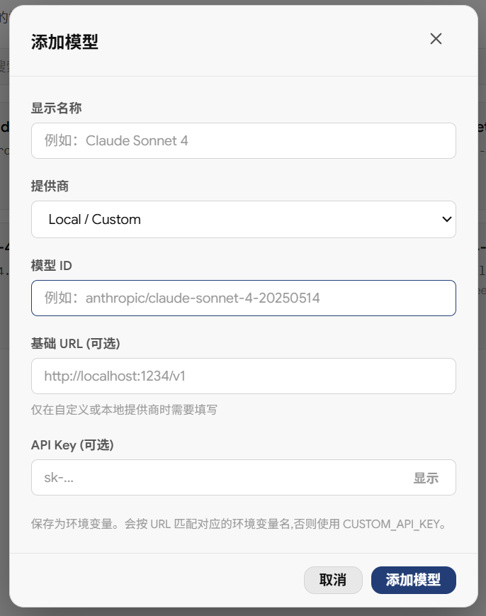
02 配置消息网关。
在 Gateway 页面找到微信，填上 Bot Token。
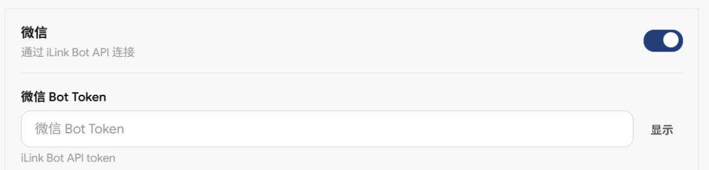
03 设置定时任务。
在 Schedules 页面，选"每天早上 9 点"，投递目标选"微信"，任务内容写"搜索今日技术新闻并生成摘要"。
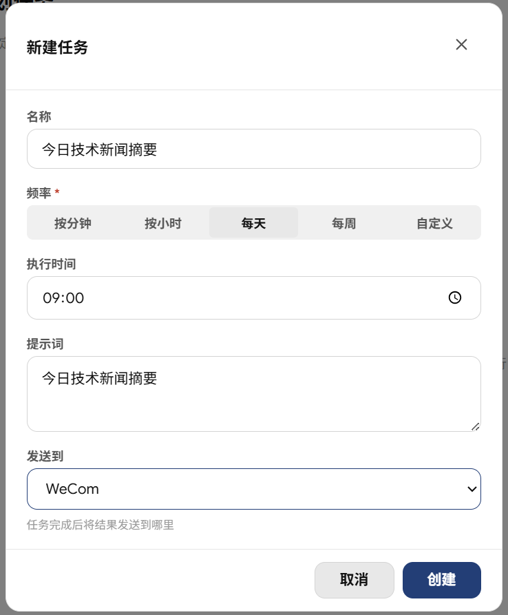
保存之后，每天早上 9 点，你的微信就会自动收到新闻摘要。
整个过程不需要改配置文件，不需要写代码，全部在界面里点一点就能完成。
这就是 Hermes Desktop 的优势——把复杂的配置变成简单的界面操作，让普通人也能用上 AI Agent 的能力。
使用前有几个点要注意。
消息平台配置。
切到 Gateway 页面，找到你想接的平台——比如 Telegram——填上 Bot Token，把开关打开，Hermes Agent 就能在这个平台上收发消息了。
其他平台操作一样，填 Key、开开关，不需要改配置文件。
系统安全警告。
macOS 用户第一次打开会被 Gatekeeper 拦住，在终端跑一下 xattr -cr "/Applications/Hermes Agent.app" 就能绕过去。
Windows 用户会遇到 SmartScreen 警告，点"更多信息"→"仍要运行"就行。
这两个问题都是因为应用没有代码签名，不是安全问题，但确实有点劝退新手。
写在最后
可以看到 Hermes Desktop 还有不少问题，前面也提到了——没代码签名、Bug 多、稳定性一般。
但对于不太懂技术，想用Agent的朋友 。
值得试一下。
使用成本有，但是不多了。
项目基于 MIT 协议开放，感兴趣的同学可以去 GitHub 仓库看看源码和文档。
开源地址：https://github.com/fathah/hermes-desktop
既然看到这了，欢迎随手点赞、在看、转发，也可以给我个星标⭐，接收最新的文章，我们下期见！